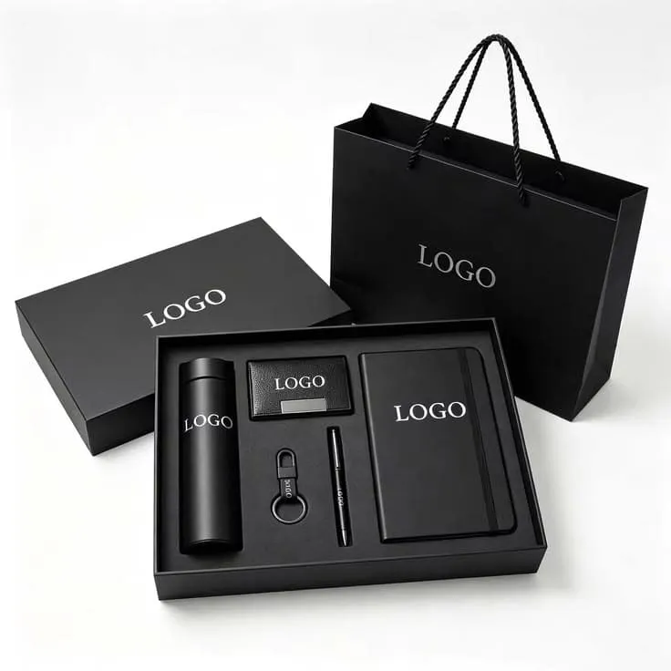

An employee onboarding kit, also called a welcome kit or joining kit, is a set of branded items a company gives each new joiner on day one. A practical kit for a Kerala office holds a steel bottle, a diary and pen, a T-shirt or polo, and a bag. INZON Times and Gifts supplies branded kits from 100 units.
What is an employee onboarding kit?
An employee onboarding kit is a box of useful, branded items that a company hands to new joiners on their first day. HR teams in Kerala use onboarding kits to make a new joiner feel welcome, to put the company's brand on items people use every day, and to give every batch of new hires the same first experience.
The terms "onboarding kit", "welcome kit", "joining kit" and "induction kit" mean the same thing. This guide uses "onboarding kit" throughout.

What should go in an employee welcome kit?
A good employee welcome kit contains items a new joiner will use at their desk, on the commute and at home, so the company logo stays in sight long after day one. Choose four to six items. More items raise the cost per kit without making the kit more useful.
| Item | Why it works in an onboarding kit | Usual branding method |
|---|---|---|
| Steel or vacuum bottle | Used every day at the desk and on the commute. | Laser engraving or printing |
| Diary and pen | Needed in induction sessions and meetings in the first weeks. | Debossing or printing on the diary; engraving on a metal pen |
| Polo or T-shirt | Builds team identity; works for events and casual days. | Embroidery or screen printing |
| Cap | Useful for field teams, sports days and outdoor events. | Embroidery |
| Tote, laptop bag or backpack | Carries the kit home and is reused for years. | Screen printing or a stitched label |
| Keychain | Low cost, small and always carried. | Laser engraving |
| Gift box | Makes the kit feel complete and protects the items. | Printed sleeve or logo sticker |
INZON confirms the right branding method for each item when it quotes. Branding methods available for each product: TO CONFIRM: list of branding methods INZON offers.
Three kit levels to choose from
Most companies pick one of three onboarding kit levels, depending on the role and the budget per new joiner. INZON can quote all three side by side so you can compare.
Essential kit
- Steel bottle, diary and pen, in a branded box.
- Suits large hiring batches, interns and campus hires.
- Indicative price per kit: TO CONFIRM: price range.
Standard kit
- Essential kit plus a polo or T-shirt and a tote bag or cap.
- Suits most full-time joiners.
- Indicative price per kit: TO CONFIRM: price range.
Executive kit
- Leather-finish diary, metal pen, vacuum flask set or premium bottle, and a laptop bag, in a rigid gift box.
- Suits managers, senior hires and leadership roles.
- Indicative price per kit: TO CONFIRM: price range.

Which items suit Kerala's climate and workplaces?
Kerala is hot and humid for most of the year and has a long monsoon season, so onboarding kit items for Kerala offices should be practical in heat and rain. Items that suit local conditions get used more, which keeps the company brand visible for longer.
- Insulated steel bottles keep water cool through a warm working day, and are reused for years.
- Breathable cotton polos and T-shirts are more comfortable than heavy fabrics. Ask INZON for the fabric and GSM options when you quote.
- Umbrellas are a useful addition for joiners who start during the monsoon months.
- Water-resistant laptop bags and backpacks protect devices on rainy commutes.
For IT and technology teams, a laptop bag or backpack and a bottle are the items most used every day. For sales and field teams, add a cap and a bottle. For manufacturing and retail teams, branded T-shirts are useful as everyday workwear.
How far ahead should you order onboarding kits?
Order onboarding kits well before the first joining date. A typical INZON order takes TO CONFIRM: lead time in working days from mockup approval to dispatch, plus delivery time within Kerala. Plan backwards from the joining date and allow time to approve the mockup.
The minimum order is 100 units. If your company hires a few people each month, order kits for a quarter or half-year of hiring in one batch and store them. Order T-shirts and polos in a spread of sizes based on your current staff, and keep a small buffer of the most common sizes.
Store kits in a dry room. Kerala's humidity can affect paper diaries and cotton apparel if they are left in damp storage for months.
How do you order onboarding kits from INZON?
Ordering onboarding kits from INZON Times and Gifts takes six steps, from your first message to delivery anywhere in Kerala.
- Share your requirement. Send the number of kits, the joining date, the budget per kit and the delivery address.
- Choose the items. INZON suggests items for your budget from the INZON product catalogue.
- Send your logo. A vector file (AI, EPS, SVG or PDF) gives the sharpest result.
- Approve the mockup and quote. INZON sends a digital mockup of your logo on each item and an itemised quote.
- Pay and confirm. Payment terms are 100% payment before delivery. You receive a GST invoice.
- Receive the kits. INZON delivers across Kerala, including Kozhikode (Calicut), Kochi, Thrissur and Thiruvananthapuram.
Frequently asked questions
What is the minimum order quantity for onboarding kits from INZON?
The minimum order for branded onboarding kits from INZON Times and Gifts is 100 units. Whether the minimum applies per kit or per individual item is TO CONFIRM: MOQ per kit or per item. If your company hires fewer than 100 people at a time, order kits for several months of hiring in one batch and store them in a dry place.
How long does it take to deliver onboarding kits in Kerala?
A typical INZON order takes TO CONFIRM: lead time in working days from mockup approval to dispatch, plus delivery time within Kerala. Timing depends on the items, the quantity, the branding method and stock of the base products. Share your first joining date when you request a quote so INZON can plan the schedule backwards from that date.
Can each onboarding kit be personalised with the new joiner's name?
Yes. Items such as steel bottles and pens can be engraved with individual names as well as the company logo, so each new joiner receives a personal item. Send the list of names in a spreadsheet with your order. Any extra charge for name personalisation is TO CONFIRM: name personalisation charge.
Can I see how the onboarding kit will look before ordering?
Yes. INZON prepares a digital mockup showing your logo on every item in the kit, with placement and colours, and production starts only after you approve it in writing. A physical sample kit is TO CONFIRM: sample policy and any sample charge, which is useful before a large order.
Does INZON provide a GST invoice for onboarding kits?
Yes. INZON Times and Gifts issues a GST invoice for business orders under GSTIN 32ABRFM8059P1ZC. Share your company name, billing address and GSTIN when you confirm the order. Payment terms are 100% payment before delivery. Ask your tax adviser how the kits should be treated in your accounts.
Can we reorder the same onboarding kit later?
Yes. Keep a note of the items, colours and branding from your approved mockup and quote, and send it when you reorder, so the next batch matches the first. Whether INZON keeps your artwork on file is TO CONFIRM: artwork storage for reorders. Product availability and prices may change between orders, so ask for a fresh quote.